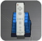

18 |
Edifici per la modalità Più giocatori |
 |
|
Per cominciare un Gioco di Squadra devi entrare nell’edificio per la modalità Più giocatori che si trova al Terminale o selezionare PIÙ GIOCATORI nel menu Pausa (vedi pag. 16: Menu Pausa).
Più giocatori
Nel Gioco di Squadra con il telecomando Wii, per poter giocare allo stesso tempo, un giocatore può usare il Nunchuk e l’altro il controller tradizionale.
Come avviare un Gioco di Squadra Qui trovi le istruzioni per impostare una partita di Gioco di Squadra.
Avvicinati all’edificio della modalità Più giocatori, premi
Dopo aver registrato il telecomando Wii e aver collegato ad esso il Nunchuk o il controller tradizionale Wii, oppure dopo aver collegato il controller per Nintendo GameCube alla console Wii, saranno visualizzati i controller registrati utilizzabili per il gioco. Per scegliere quale controller userai, premi
Per ogni giocatore appare un menu Cambio da cui scegliere il Pokémon con cui iniziare. Due giocatori, però, non potranno scegliere lo stesso Pokémon.
Quando tutti avranno scelto il proprio Pokémon apparirà una schermata di conferma. Per confermare le impostazioni del Gioco di Squadra, basterà che uno dei giocatori prema
Una volta scelte tutte le impostazioni per il Gioco di Squadra, i Pokémon appariranno al Terminale contrassegnati dal numero del giocatore corrispondente e dal suo stesso colore (come nell’elenco dei controller usati).
Terminare il Gioco di Squadra Se desideri terminare il Gioco di Squadra e continuare in modalità singolo giocatore, o se uno dei partecipanti vuole semplicemente uscire dalla partita, i giocatori che continuano dovranno cambiare o riconfermare il proprio Pokémon dall'edificio della modalità Più giocatori o tramite l'opzione PIÙ GIOCATORI del menu Pausa. I giocatori che lasciano il Gioco di Squadra devono premere il pulsante per annullare (vedi pag. 7: Comandi) nel menu Cambio della modalità Più giocatori. I giocatori che continuano, invece, dovranno cambiare o riconfermare il Pokémon e premere
Da/in telecomando Wii  Potrai esportare Pokémon che hai salvato nella console Wii nel telecomando Wii, o viceversa. Se invii un tuo Pokémon al telecomando Wii potrai usarlo con la console Wii di un amico in modalità Più giocatori. Se invece lo esporti direttamente nella console Wii di un amico glielo regalerai. I Pokémon che hanno una limitazione di Forza a causa della Chiavetta Misteriosa non possono essere esportati. Inoltre, in uno stesso telecomando Wii non si possono esportare più di 12 Pokémon.
Se nel telecomando Wii ci sono altri dati (ad eccezione dei dati sui Mii™), questi verranno sovrascritti, quindi fai molta attenzione. Solo i Pokémon di Pokémon Rumble possono essere esportati nel telecomando Wii. Attenzione: i Pokémon esportati in un telecomando Wii dalla console Wii, e viceversa, scompaiono dal luogo di partenza, quindi fai molta attenzione.
Esportare Pokémon in un telecomando Wii o in una console Wii Per esportare Pokémon dalla console al telecomando Wii, seleziona Sì nella schermata Da/in telecomando Wii e scegli il Pokémon premendo Per esportare un Pokémon dal telecomando Wii alla console Wii, scegli il Pokémon (contrassegnato da |
 e scegli Sì; oppure seleziona PIÙ GIOCATORI dal menu Pausa.
e scegli Sì; oppure seleziona PIÙ GIOCATORI dal menu Pausa.  per il Nunchuk,
per il Nunchuk,  per il controller tradizionale o
per il controller tradizionale o  per il controller del Nintendo GameCube. Se colleghi il Nunchuk o il controller tradizionale al telecomando Wii, lo vedrai specificato.
per il controller del Nintendo GameCube. Se colleghi il Nunchuk o il controller tradizionale al telecomando Wii, lo vedrai specificato. (oppure
(oppure  .
. |
 |
 |